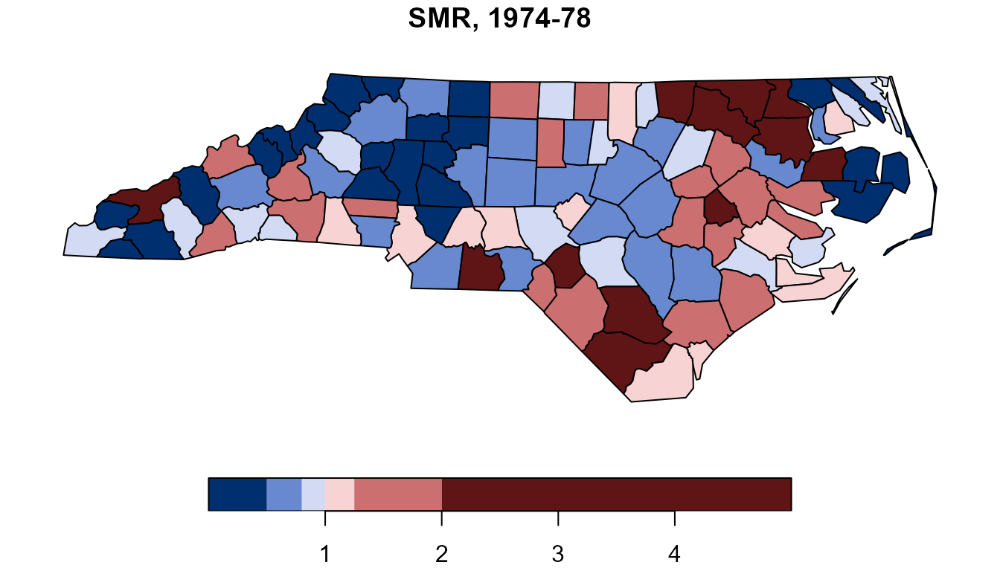
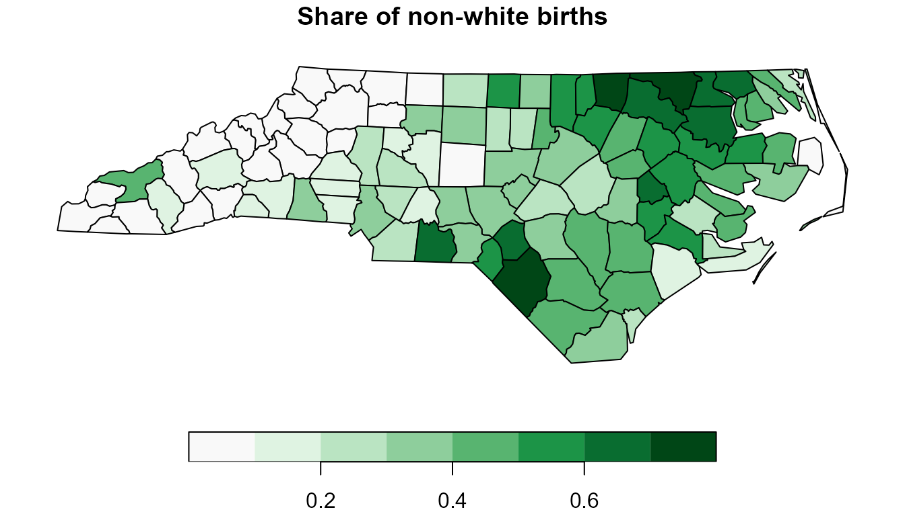
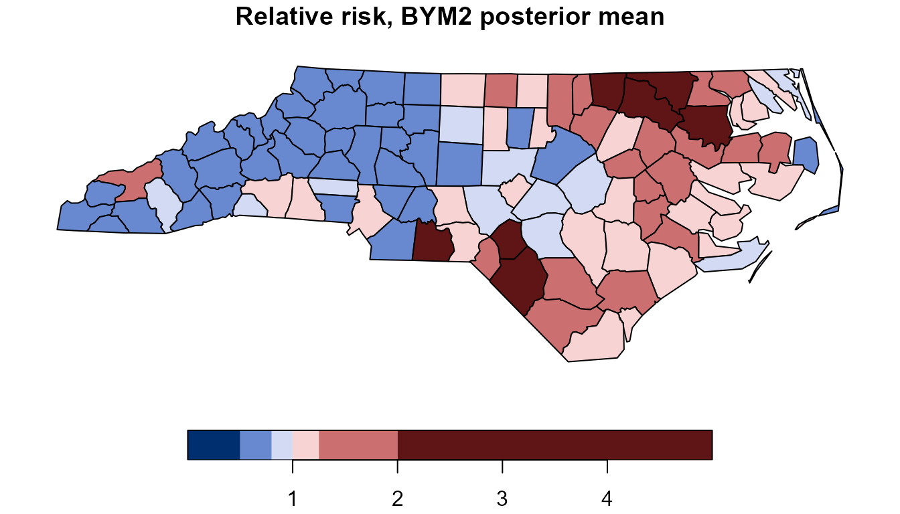
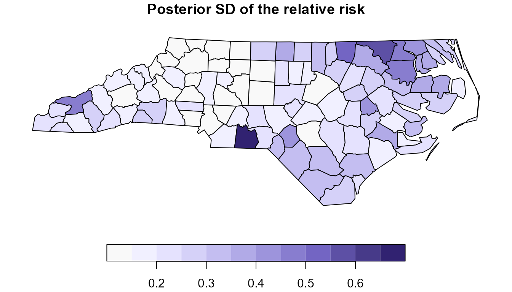
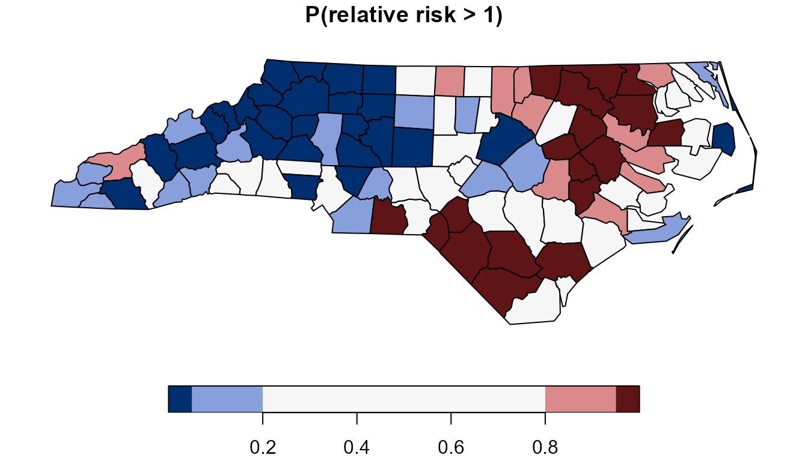

Case study: sudden infant deaths in North Carolina
Source:vignettes/articles/case-study-sids.Rmd
case-study-sids.RmdThis article analyses a real dataset from start to finish: counts of sudden infant death syndrome (SIDS) in the 100 counties of North Carolina. The question is whether counties with a larger share of non-white births have a higher SIDS risk once neighbouring counties are allowed to share unmeasured risk. It ends with a map of each county’s relative risk, the probability that the risk exceeds the state average, and a list of what the data can and cannot answer. The data ship with sf, which also reads the county polygons; spdep is used once to cross-check the neighbour graph. The model family itself is introduced in Spatial models, which fits the same fields to simulated data with a known truth.
Installation is covered in Get started.
The data
The file nc.shp in sf holds one polygon per county and,
for two periods (1974-78 and 1979-84), the number of live births
(BIR74, BIR79), the number of SIDS deaths
(SID74, SID79) and the number of non-white
live births (NWBIR74, NWBIR79). sf documents
it as the North Carolina SIDS sample data (?sf::nc); the
counts were analysed for spatial clustering by Cressie and Read (1985)
and Cressie and Chan (1989). The polygons are stored in longitude and
latitude (NAD27). Transform them to the North Carolina state plane (EPSG
32119), a planar system in metres, so that boundaries and centroids are
computed on a flat map.
nc <- st_read(system.file("shape/nc.shp", package = "sf"), quiet = TRUE)
nc <- st_transform(nc, 32119)
dim(nc)
#> [1] 100 15Most of the analysis uses the first period. The deaths are rare: a county with few births may record none, and the raw rate of such a county says little.
summary(nc$SID74)
#> Min. 1st Qu. Median Mean 3rd Qu. Max.
#> 0.00 2.00 4.00 6.67 8.25 44.00
sum(nc$SID74 == 0)
#> [1] 13Risk is compared through the expected count : the number of deaths county would have if every county shared the statewide rate, , with the births and the deaths of county . The ratio is the standardised mortality ratio (SMR). The covariate is the share of non-white births, centred at its mean across counties and multiplied by 10, so that its coefficient is the change in log relative risk per 10 percentage points.
nc$E <- nc$BIR74 * sum(nc$SID74) / sum(nc$BIR74)
nc$smr <- nc$SID74 / nc$E
nc$pnw <- nc$NWBIR74 / nc$BIR74
pnw_mean <- mean(nc$pnw)
nc$x <- 10 * (nc$pnw - pnw_mean)
round(pnw_mean, 3)
#> [1] 0.312
round(range(nc$smr), 2)
#> [1] 0.00 4.73
br <- c(0, 0.5, 0.8, 1, 1.25, 2, 5)
plot(nc["smr"], breaks = br, pal = hcl.colors(6, "Blue-Red 3"),
main = "SMR, 1974-78", key.pos = 1)
plot(nc["pnw"], pal = function(k) hcl.colors(k, "Greens 3", rev = TRUE),
main = "Share of non-white births", key.pos = 1)
The mean non-white share across counties is 31.2%. The SMR runs from zero, in the 13 counties without a recorded death, to 4.73, and neighbouring counties often fall in classes far apart. High SMRs gather in the north-east and the south of the state, the same two regions where the non-white share is highest.
The model
Write for the SIDS deaths of county and for its scaled non-white share. The counts are modelled as Poisson around the expected count times a relative risk :
Taking logs, enters the linear predictor with coefficient one; this fixed term is the offset. is the log relative risk of a county at the mean non-white share, the change per 10 percentage points, and a county effect that carries the part of the risk the covariate does not explain. The non-spatial model sets .
Two priors for tie each county to its neighbours. The intrinsic conditional autoregression (ICAR) centres each on the mean of its neighbours, with a precision that sets how strongly they agree. BYM2 writes the field as a mix of a scaled ICAR part and an independent part per county, with an overall standard deviation and a share of the variance that is spatially structured. Both are written out in Spatial models; here they are compared on the same counties.
Building the neighbour graph
Two counties are neighbours when their polygons share a boundary
point. adjacency() builds that graph directly from the
polygons; id = "FIPS" records the county code of each node,
so the graph can be matched to the data by key.
g <- adjacency(nc, id = "FIPS")
g
#> <tulpa_adjacency>
#> nodes: 100 edges: 245 (queen contiguity)
#> neighbours per node: min 2, mean 4.90, max 9
#> pass $adjacency to spatial(graph = ) and node_index() to remap datacheck_adjacency() confirms that the matrix is symmetric
and binary, and, for an intrinsic field, the property that matters most:
the graph has one connected component and no county without
neighbours.
chk <- check_adjacency(g$adjacency)The same contiguity rule in spdep gives the same matrix:
nb <- spdep::poly2nb(nc, queen = TRUE)
W_spdep <- spdep::nb2mat(nb, style = "B")
all(W_spdep == as.matrix(g$adjacency))
#> [1] TRUEThe model needs a column mapping each row of the data to a node of
the graph. node_index() looks the county code up in the
graph. Build the data frame the fits use, with one row per county:
W <- as.matrix(g$adjacency)
d <- st_drop_geometry(nc)[, c("NAME", "FIPS", "SID74", "E", "x")]
d$county <- node_index(g, d$FIPS)
head(d, 3)
#> NAME FIPS SID74 E x county
#> 1 Ashe 37009 1 2.2053964 -3.033321 1
#> 2 Alleghany 37005 0 0.9844437 -2.919641 2
#> 3 Surry 37171 5 6.4443663 -2.472533 3A non-spatial fit
The offset enters the formula as offset(log(E)). Fit the
Poisson model without a county effect first:
fit0 <- tulpa(SID74 ~ x + offset(log(E)), data = d,
family = "poisson", mode = "laplace")
summary(fit0)
#> tulpa fit (laplace, tier 2)
#> Call: tulpa(formula = SID74 ~ x + offset(log(E)), data = d, family = "poisson", mode = "laplace")
#> inference mode: structured
#> selected because: User-specified backend: laplace
#> family: poisson
#> n_obs: 100
#>
#> Fixed effects:
#> estimate std.error 2.5 % 97.5 %
#> (Intercept) -0.06231 0.04098 -0.1426 0.01801
#> x 0.18700 0.02172 0.1444 0.22958
#>
#> Fixed-effect prior: normal(0, 2.5)The slope is 0.187 per 10 percentage points, with a standard error of 0.022. Exponentiated, its interval bounds give the ratio of the relative risks of two counties whose non-white shares differ by 10 percentage points:
Residual spatial structure
A spatial term is justified when the residuals of the non-spatial fit
still cluster on the map. moran_i() tests that with Moran’s
I on a set of neighbour weights. With polygons, the coordinates are the
county centroids, and the five nearest neighbours of each centroid stand
in for the contiguity graph, whose mean is 4.9 neighbours per
county.
Start with the raw risk: the Pearson residuals of a model with an intercept only.
cc <- st_coordinates(st_centroid(st_geometry(nc)))
fit_int <- tulpa(SID74 ~ 1 + offset(log(E)), data = d,
family = "poisson", mode = "laplace")
moran_i(fit_int, cc, weights = "knn", k = 5)
#>
#> Moran's I (k=5 nearest neighbours)
#>
#> data: fit_int
#> Moran's I = 0.27435, Expected I = -0.010101, p-value = 9.587e-07
#> alternative hypothesis: two.sidedThen the residuals after the covariate:
moran_i(fit0, cc, weights = "knn", k = 5)
#>
#> Moran's I (k=5 nearest neighbours)
#>
#> data: fit0
#> Moran's I = 0.037678, Expected I = -0.010101, p-value = 0.413
#> alternative hypothesis: two.sidedThe raw risk clusters: Moran’s I is 0.274, against an expectation of -0.010 under no autocorrelation (p < 0.001). After the covariate, I falls to 0.038 (p = 0.41), so most of the clustering of the raw rates follows the map of the non-white share, which is clustered itself. A test on 100 counties may still miss weak residual structure, and a field changes the uncertainty of the slope even where the test finds none, which the next section shows.
Spatial fits
An areal field takes two pieces:
spatial = list(type =, adjacency =) carries the graph, and
a spatial(county) term in the formula names the column that
maps rows to nodes. mode = "nested_laplace" integrates the
field’s hyperparameters over a grid.
fit_icar <- tulpa(SID74 ~ x + offset(log(E)) + spatial(county), data = d,
family = "poisson",
spatial = list(type = "icar", adjacency = W),
mode = "nested_laplace", control = list(n_threads = 2))
#> [nested-laplace] 1/9 cells (11%) | elapsed 0s | ETA >=0s | 0.00s/cells
#> [nested-laplace] 6/6 cells (100%) | elapsed 0s | ETA done | 0.00s/cells
summary(fit_icar)
#> tulpa fit (nested_laplace, tier 2)
#> Call: tulpa(formula = SID74 ~ x + offset(log(E)) + spatial(county), data = d, family = "poisson", mode = "nested_laplace", spatial = list(type = "icar", adjacency = W), control = list(n_threads = 2))
#> inference mode: structured
#> selected because: User-specified backend: nested_laplace
#> family: poisson
#> n_obs: 100
#>
#> Fixed effects:
#> estimate std.error 2.5 % 97.5 %
#> (Intercept) -0.04955 0.04939 -0.1638 0.02981
#> x 0.19612 0.03408 0.1303 0.26392
#> interval read: skew_map_cell
#> interval declined: skew_correct: gamma_3 is retained at the MAP cell only, so the mixture components carry no per-cell skew to compose; the coefficients it declines keep the read they would have had
#>
#> Hyperparameters:
#> parameter mean sd median ci_lo ci_hi
#> tau 179.5 8778 7.392 2.627 68.6
#>
#> Fixed-effect prior: normal(0, 2.5)
#>
#> Reliability (iid draws):
#> outer pareto_k -1.069 (good); grid ESS 4.163 of 19 cells; inner skew 0.02376 (good)
#> verdict: reliable (both layers good)The slope moves from 0.187 to 0.197 and its standard error from 0.022
to 0.034. The field’s precision
has a posterior mean of 9.2 and a 95% interval from 2.6 to 39. As a
standard deviation,
,
that is between 0.16 and 0.62 on the log relative-risk scale. The
reliability line calls the outer integration borderline: the grid weight
sits on 3.8 effective cells out of 9, so the interval for
is resolved to about one grid cell. diagnostics(fit_icar)
gives the full report.
BYM2 adds an independent part per county to the ICAR field:
fit_bym2 <- tulpa(SID74 ~ x + offset(log(E)) + spatial(county), data = d,
family = "poisson",
spatial = list(type = "bym2", adjacency = W),
mode = "nested_laplace", control = list(n_threads = 2))
#> [nested-laplace] preparing joint Hessian sparsity pattern
#> [nested-laplace] 1/30 cells (3%) | elapsed 0s | ETA >=0s | 0.00s/cells
#> [nested-laplace] 18/18 cells (100%) | elapsed 0s | ETA done | 0.00s/cells
#> [nested-laplace] preparing joint Hessian sparsity pattern
#> [nested-laplace] 1/25 cells (4%) | elapsed 0s | ETA >=0s | 0.00s/cells
#> [nested-laplace] 24/24 cells (100%) | elapsed 0s | ETA done | 0.00s/cells
summary(fit_bym2)
#> tulpa fit (nested_laplace, tier 2)
#> Call: tulpa(formula = SID74 ~ x + offset(log(E)) + spatial(county), data = d, family = "poisson", mode = "nested_laplace", spatial = list(type = "bym2", adjacency = W), control = list(n_threads = 2))
#> inference mode: structured
#> selected because: User-specified backend: nested_laplace
#> family: poisson
#> n_obs: 100
#>
#> Fixed effects:
#> estimate std.error 2.5 % 97.5 %
#> (Intercept) -0.04414 0.05240 -0.1669 0.03847
#> x 0.19608 0.03272 0.1328 0.26107
#> interval read: skew_map_cell
#> interval declined: skew_correct: gamma_3 is retained at the MAP cell only, so the mixture components carry no per-cell skew to compose; the coefficients it declines keep the read they would have had
#>
#> Hyperparameters:
#> parameter mean sd median ci_lo ci_hi
#> sigma 0.2661 0.07339 0.2647669 1.219e-01 0.4132
#> rho 0.4280 0.28702 0.0000286 1.430e-06 0.1804
#>
#> Fixed-effect prior: normal(0, 2.5)
#>
#> Reliability (iid draws):
#> grid ESS 12.26 of 277 cells; inner skew 0.02642 (good)
#> verdict: outer integration not assessed; inner Laplace goodBYM2 gives the same slope, 0.197 with a standard error of 0.033. Its field has a standard deviation of 0.27 (95% interval 0.12 to 0.42) on the log relative-risk scale. The structured share has an interval from 0.09 to 0.97, so 100 counties leave open how much of the county variation is shared with neighbours and how much is independent. The summary reports no reliability verdict for this grid (“not computed”).
The three slopes side by side, as relative risks per 10 percentage points:
fits <- list(nonspatial = fit0, icar = fit_icar, bym2 = fit_bym2)
slope_row <- function(f) unlist(coef(summary(f))["x", ])
slopes <- t(sapply(fits, slope_row))
round(exp(slopes[, c(1, 3, 4)]), 3)
#> estimate 2.5 % 97.5 %
#> nonspatial 1.206 1.155 1.258
#> icar 1.217 1.139 1.302
#> bym2 1.217 1.142 1.298
round(slopes[, "std.error"], 3)
#> nonspatial icar bym2
#> 0.022 0.034 0.033All three fits put the relative risk per 10 percentage points at 1.21 or 1.22. The spatial fits widen the interval, with standard errors of 0.033 and 0.034 against 0.022: the field adds county-level variation beyond the Poisson noise, and the slope’s uncertainty grows with it.
Mapping relative risk
A nested-Laplace fit stores, for every cell of its hyperparameter
grid, the mean and variance of each observation’s linear predictor
(fitted_eta and fitted_eta_var, see
?tulpa_nested_laplace), offset included. The posterior of
the linear predictor is the mixture of these Gaussians, weighted by the
grid weights tulpa_outer_grid() returns. The helper below
draws from that mixture county by county and divides by the expected
count, which gives draws of
.
rr_draws <- function(fit, E, n = 4000) {
w <- tulpa_outer_grid(fit)$weights
k <- sample(seq_along(w), n, replace = TRUE, prob = w)
m <- fit$fitted_eta[k, , drop = FALSE]
s <- sqrt(fit$fitted_eta_var[k, , drop = FALSE])
eta <- m + s * matrix(rnorm(length(m)), nrow(m))
sweep(exp(eta), 2, E, "/")
}Each column is one county. Because a draw picks one grid cell for every county at once but draws the counties independently within it, the columns give each county’s own posterior correctly; a quantity that combines several counties (a ranking, a regional total) would need their joint covariance, which the fit does not keep.
set.seed(1)
th <- rr_draws(fit_bym2, d$E)
nc$rr <- colMeans(th)
nc$rr_sd <- apply(th, 2, sd)
nc$p_exc <- colMeans(th > 1)
summary(nc$rr)
#> Min. 1st Qu. Median Mean 3rd Qu. Max.
#> 0.5233 0.6916 1.0094 1.0688 1.2917 2.5139
round(range(nc$rr[nc$SID74 == 0]), 2)
#> [1] 0.52 1.49
plot(nc["rr"], breaks = br, pal = hcl.colors(6, "Blue-Red 3"),
main = "Relative risk, BYM2 posterior mean", key.pos = 1)
On the same colour classes, the fitted risks span a narrower range than the SMRs, from 0.52 to 2.51 against 0 to 4.73. The 13 counties without a recorded death get fitted risks from 0.52 to 1.48, set by their non-white share and their neighbours.
plot(nc["rr_sd"], pal = function(k) hcl.colors(k, "Purples 3", rev = TRUE),
main = "Posterior SD of the relative risk", key.pos = 1)
The posterior standard deviation shows how well each county’s risk is determined:
summary(nc$rr_sd)
#> Min. 1st Qu. Median Mean 3rd Qu. Max.
#> 0.1227 0.1603 0.2199 0.2480 0.3007 0.6629
nc$NAME[which.max(nc$rr_sd)]
#> [1] "Anson"
round(cor(nc$rr, nc$rr_sd), 2)
#> [1] 0.89The standard deviation runs from 0.12 to 0.67, largest in Anson County, and its correlation with the posterior mean across counties is 0.89. The risk is the exponential of a roughly Gaussian linear predictor, so its standard deviation grows with its mean, and the map above largely repeats the risk map. The probability that the risk exceeds one combines the two into a single number per county:
plot(nc["p_exc"], breaks = c(0, 0.05, 0.2, 0.8, 0.95, 1),
pal = hcl.colors(5, "Blue-Red 3"),
main = "P(relative risk > 1)", key.pos = 1)
The exceedance probability reads off which counties the data place above the state average with some confidence:
sum(nc$p_exc > 0.95)
#> [1] 18
sum(nc$p_exc < 0.05)
#> [1] 26
head(st_drop_geometry(nc)[order(-nc$p_exc),
c("NAME", "SID74", "smr", "rr", "p_exc")], 5)
#> NAME SID74 smr rr p_exc
#> 5 Northampton 9 3.133189 2.506498 1.00000
#> 16 Halifax 18 2.467994 2.079386 1.00000
#> 85 Anson 15 4.726392 2.513942 1.00000
#> 94 Robeson 31 1.943918 2.107229 1.00000
#> 28 Bertie 6 2.241823 2.110966 0.99975In 18 counties the posterior probability that the risk exceeds the state average is above 0.95, and in 26 it is below 0.05. Anson County has the largest SMR, 4.73 on 15 deaths, and a fitted risk of 2.51. The counties with a high exceedance probability lie in the north-east and the south, the regions with the highest non-white share.
Residual Moran’s I after the spatial fit
moran_i() on a tulpa fit reads its residuals at the
posterior-mean linear predictor with the field included
(effects = "conditional", the default), so it tests what
the spatial model leaves behind:
moran_i(fit_bym2, cc, weights = "knn", k = 5)
#>
#> Moran's I (k=5 nearest neighbours)
#>
#> data: fit_bym2
#> Moran's I = -0.023619, Expected I = -0.010101, p-value = 0.8178
#> alternative hypothesis: two.sidedMoran’s I of these residuals is -0.030 (p = 0.74). The check is weak by construction: every county has its own field value, so the fitted mean follows each county’s count and the residuals shrink towards zero. A value near zero says the spatial model leaves no clustering in its residuals; it does not show that the field has the right form.
Comparing the models
compare_models() ranks the fits by WAIC or PSIS-LOO,
both computed from each fit’s pointwise log-likelihood with the field
included.
compare_models(nonspatial = fit0, icar = fit_icar, bym2 = fit_bym2,
criterion = "waic")
#> model elpd se_elpd p_eff ic delta se_diff
#> 3 bym2 -215.6572 11.15323 22.967569 431.3144 0.000000 NA
#> 2 icar -217.6883 12.10783 21.771582 435.3766 -2.031073 1.520140
#> 1 nonspatial -221.3982 14.07509 3.111261 442.7964 -5.740978 3.996567
#> weight
#> 3 0.881518328
#> 2 0.115650566
#> 1 0.002831106
compare_models(nonspatial = fit0, icar = fit_icar, bym2 = fit_bym2,
criterion = "loo")
#> model elpd se_elpd p_eff ic delta se_diff
#> 3 bym2 -216.7733 11.27624 24.083619 433.5465 0.000000 NA
#> 2 icar -217.8751 11.95163 21.958404 435.7502 -1.101845 1.375469
#> 1 nonspatial -221.4318 14.08014 3.144835 442.8635 -4.658503 3.969053
#> weight
#> 3 0.74530186
#> 2 0.24763220
#> 1 0.00706594Both spatial models score higher than the non-spatial one, by an
amount close to its own uncertainty. BYM2 leads the non-spatial fit by
5.5 in expected log predictive density under WAIC and by 4.6 under LOO,
with a standard error of the difference of 4.0 and 3.9. ICAR and BYM2
differ by 1.1 and 0.6, within one standard error. The effective number
of parameters (p_eff) is about 3 for the non-spatial fit
and 21 to 24 for the spatial ones, the cost of one field value per
county.
Sensitivity to the prior on the field
On the nested-Laplace path the field’s scale axis carries a penalised
complexity (PC) prior with
by default (hyperprior = "proper", see
?tulpa_nested_laplace), carried to whichever of
or
the axis integrates. hyperprior = "flat" removes it, so the
field’s scale is integrated under the grid’s own measure. Refit both
spatial models that way:
fit_icar_flat <- tulpa(
SID74 ~ x + offset(log(E)) + spatial(county), data = d,
family = "poisson", spatial = list(type = "icar", adjacency = W),
mode = "nested_laplace", hyperprior = "flat",
control = list(n_threads = 2))
#> [nested-laplace] 1/9 cells (11%) | elapsed 0s | ETA >=0s | 0.00s/cells
#> [nested-laplace] 6/6 cells (100%) | elapsed 0s | ETA done | 0.00s/cells
fit_bym2_flat <- tulpa(
SID74 ~ x + offset(log(E)) + spatial(county), data = d,
family = "poisson", spatial = list(type = "bym2", adjacency = W),
mode = "nested_laplace", hyperprior = "flat",
control = list(n_threads = 2))
#> [nested-laplace] preparing joint Hessian sparsity pattern
#> [nested-laplace] 1/30 cells (3%) | elapsed 0s | ETA >=0s | 0.00s/cells
#> [nested-laplace] 17/17 cells (100%) | elapsed 0s | ETA done | 0.00s/cells
#> [nested-laplace] preparing joint Hessian sparsity pattern
#> [nested-laplace] 1/30 cells (3%) | elapsed 0s | ETA >=0s | 0.00s/cells
#> [nested-laplace] 30/30 cells (100%) | elapsed 0s | ETA done | 0.00s/cellsThe slope and the field hyperparameters under the two priors:
pfits <- list(icar_pc = fit_icar, icar_flat = fit_icar_flat,
bym2_pc = fit_bym2, bym2_flat = fit_bym2_flat)
round(t(sapply(pfits, slope_row)), 3)
#> estimate std.error 2.5 % 97.5 %
#> icar_pc 0.196 0.034 0.130 0.264
#> icar_flat 0.196 0.034 0.131 0.264
#> bym2_pc 0.196 0.033 0.133 0.261
#> bym2_flat 0.196 0.032 0.133 0.260
hyp <- lapply(pfits, function(f)
summary(f)$hyperparameters[, c("parameter", "mean", "ci_lo", "ci_hi")])
do.call(rbind, hyp)
#> parameter mean ci_lo ci_hi
#> icar_pc tau 179.4541808 2.627120e+00 68.5964799
#> icar_flat tau 10.2253324 2.715576e+00 54.4634023
#> bym2_pc.1 sigma 0.2660641 1.219077e-01 0.4132207
#> bym2_pc.2 rho 0.4280388 1.430006e-06 0.1803753
#> bym2_flat.1 sigma 0.2599658 1.259744e-01 0.4031161
#> bym2_flat.2 rho 0.4293178 7.353491e-03 0.9682926Under every prior the slope is 0.196 or 0.197, with standard errors
within 0.002 of each other. The posterior of the field’s scale changes
in its tail: the ICAR precision’s interval runs from 2.7 to 54 under the
flat prior against 2.6 to 39 under the PC prior, and the BYM2 standard
deviation from 0.09 to 0.40 against 0.12 to 0.42. For an areal field
tulpa() offers these two choices; the PC prior’s anchor is
fixed at
on this path (Priors).
A second period
The 1979-84 counts give a second look at the same counties. Rebuild the expected counts and the covariate from the later columns, keeping the 1974-78 mean for the centring so that means the same share in both periods, and refit the BYM2 model:
d79 <- st_drop_geometry(nc)[, c("FIPS", "SID79", "BIR79", "NWBIR79")]
d79$E <- d79$BIR79 * sum(d79$SID79) / sum(d79$BIR79)
d79$x <- 10 * (d79$NWBIR79 / d79$BIR79 - pnw_mean)
d79$county <- node_index(g, d79$FIPS)
fit_bym2_79 <- tulpa(SID79 ~ x + offset(log(E)) + spatial(county),
data = d79, family = "poisson",
spatial = list(type = "bym2", adjacency = W),
mode = "nested_laplace", control = list(n_threads = 2))
#> [nested-laplace] preparing joint Hessian sparsity pattern
#> [nested-laplace] 1/30 cells (3%) | elapsed 0s | ETA >=0s | 0.00s/cells
#> [nested-laplace] 16/16 cells (100%) | elapsed 0s | ETA done | 0.00s/cells
#> [nested-laplace] preparing joint Hessian sparsity pattern
#> [nested-laplace] 1/25 cells (4%) | elapsed 0s | ETA >=0s | 0.00s/cells
#> [nested-laplace] 24/24 cells (100%) | elapsed 0s | ETA done | 0.00s/cells
round(exp(coef(summary(fit_bym2_79))["x", c(1, 3, 4)]), 3)
#> estimate 2.5 % 97.5 %
#> x 1.07 1.003 1.142The later period gives a weaker association: a relative risk of 1.07 per 10 percentage points, with an interval from 1.003 to 1.144. That interval ends where the 1974-78 interval (1.142 to 1.302) begins, so the two periods agree that the association is positive and differ on its size.
What the data can and cannot say
Across the counties of North Carolina in 1974-78, a higher share of non-white births goes with a higher SIDS rate: a relative risk of about 1.21 per 10 percentage points in every model fitted here. Allowing neighbouring counties to share unmeasured risk leaves that estimate where it was and widens its interval by about half. The clustering of the raw rates largely follows the covariate, which is itself clustered on the map.
The estimate compares counties, and it cannot be carried over to infants. The data record deaths per county, without the race of the infants who died, so a county-level slope of this size is consistent with many individual-level patterns, including ones in which the excess deaths in high-share counties occur among white infants. Reading a group-level association as an individual-level one is the ecological fallacy. The non-white share may also stand for other county characteristics the data do not contain, such as income or access to care, so the slope describes an association between county rates and is not a causal effect of the share.
One hundred counties set the precision of everything above. The BYM2 split between structured and independent county effects is left almost entirely open ( between 0.09 and 0.97), the predictive gain of the spatial models is 4.6 to 5.5 against a standard error of about 4.0, and the second period puts the association at 1.07 instead of 1.22. A single county’s risk rests on its own few deaths plus what its neighbours and covariate lend it; the exceedance map separates 18 counties above the state average and 26 below it with probability 0.95, and leaves the remaining 56 undecided.
See also
- Spatial models: the ICAR and BYM2 fields on simulated data, with recovery checks against a known truth.
- Model comparison: WAIC, PSIS-LOO and the evidence on tulpa fits.
- Priors: the default priors on every path, including the PC prior on a field’s scale.
-
?adjacency,?check_adjacency,?node_index: building and validating a neighbour graph.